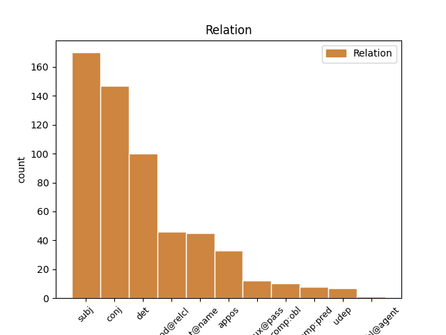
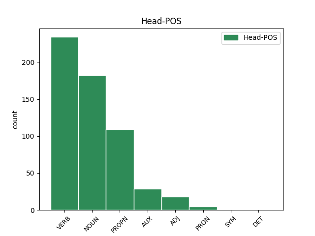
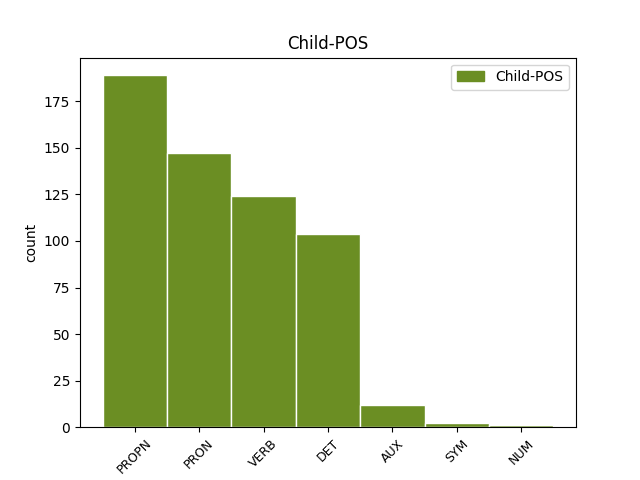

Distribution of features within this leaf



Agreement Rules sorted by frequency.
- When the dependent token is the subject(subj) of the head token, and the dependent token is PRON.
1 Ён Ён PRON PRP Case=Nom|Gender=Masc|Number=Sing|Person=3 2 subj _ _
2 прыставаў прыставаць VERB VBC Aspect=Imp|Gender=Masc|Mood=Ind|Number=Sing|Tense=Past|VerbForm=Fin|Voice=Act 0 _ _ _
3 да _ _ _ _ 0 _ _ _
4 свайго _ _ _ _ 0 _ _ _
5 даўганогага _ _ _ _ 0 _ _ _
6 дзядзькі _ _ _ _ 0 _ _ _
7 Жырафа _ _ _ _ 0 _ _ _
8 і _ _ _ _ 0 _ _ _
9 пытаўся _ _ _ _ 0 _ _ _
10 , _ _ _ _ 0 _ _ _
11 чаму _ _ _ _ 0 _ _ _
12 ў _ _ _ _ 0 _ _ _
13 яго _ _ _ _ 0 _ _ _
14 на _ _ _ _ 0 _ _ _
15 скуры _ _ _ _ 0 _ _ _
16 плямы _ _ _ _ 0 _ _ _
17 , _ _ _ _ 0 _ _ _
18 і _ _ _ _ 0 _ _ _
19 высачэзны _ _ _ _ 0 _ _ _
20 дзядзька _ _ _ _ 0 _ _ _
21 Жыраф _ _ _ _ 0 _ _ _
22 даваў _ _ _ _ 0 _ _ _
23 яму _ _ _ _ 0 _ _ _
24 за _ _ _ _ 0 _ _ _
25 гэта _ _ _ _ 0 _ _ _
26 грымака _ _ _ _ 0 _ _ _
27 сваім _ _ _ _ 0 _ _ _
28 цвёрдым _ _ _ _ 0 _ _ _
29 , _ _ _ _ 0 _ _ _
30 як _ _ _ _ 0 _ _ _
31 камень _ _ _ _ 0 _ _ _
32 , _ _ _ _ 0 _ _ _
33 капытом _ _ _ _ 0 _ _ _
34 . _ _ _ _ 0 _ _ _
1 Ён _ _ _ _ 0 _ _ _
2 прыставаў _ _ _ _ 0 _ _ _
3 да _ _ _ _ 0 _ _ _
4 свайго _ _ _ _ 0 _ _ _
5 даўганогага _ _ _ _ 0 _ _ _
6 дзядзькі _ _ _ _ 0 _ _ _
7 Жырафа _ _ _ _ 0 _ _ _
8 і _ _ _ _ 0 _ _ _
9 пытаўся _ _ _ _ 0 _ _ _
10 , _ _ _ _ 0 _ _ _
11 чаму _ _ _ _ 0 _ _ _
12 ў _ _ _ _ 0 _ _ _
13 яго _ _ _ _ 0 _ _ _
14 на _ _ _ _ 0 _ _ _
15 скуры _ _ _ _ 0 _ _ _
16 плямы _ _ _ _ 0 _ _ _
17 , _ _ _ _ 0 _ _ _
18 і _ _ _ _ 0 _ _ _
19 высачэзны _ _ _ _ 0 _ _ _
20 дзядзька _ _ _ _ 0 _ _ _
21 Жыраф _ _ _ _ 0 _ _ _
22 даваў _ _ _ _ 0 _ _ _
23 яму _ _ _ _ 0 _ _ _
24 за _ _ _ _ 0 _ _ _
25 гэта _ _ _ _ 0 _ _ _
26 грымака _ _ _ _ 0 _ _ _
27 сваім свой DET JJL Case=Ins|Gender=Masc|Number=Sing 33 det _ _
28 цвёрдым _ _ _ _ 0 _ _ _
29 , _ _ _ _ 0 _ _ _
30 як _ _ _ _ 0 _ _ _
31 камень _ _ _ _ 0 _ _ _
32 , _ _ _ _ 0 _ _ _
33 капытом капыт NOUN NN Animacy=Inan|Case=Ins|Gender=Masc|Number=Sing 0 _ _ _
34 . _ _ _ _ 0 _ _ _
1 Ён _ _ _ _ 0 _ _ _
2 прыставаў _ _ _ _ 0 _ _ _
3 да _ _ _ _ 0 _ _ _
4 свайго _ _ _ _ 0 _ _ _
5 даўганогага _ _ _ _ 0 _ _ _
6 дзядзькі _ _ _ _ 0 _ _ _
7 Жырафа _ _ _ _ 0 _ _ _
8 і _ _ _ _ 0 _ _ _
9 пытаўся пытацца VERB VBC Aspect=Imp|Gender=Masc|Mood=Ind|Number=Sing|Tense=Past|VerbForm=Fin|Voice=Mid 0 _ _ _
10 , _ _ _ _ 0 _ _ _
11 чаму _ _ _ _ 0 _ _ _
12 ў _ _ _ _ 0 _ _ _
13 яго _ _ _ _ 0 _ _ _
14 на _ _ _ _ 0 _ _ _
15 скуры _ _ _ _ 0 _ _ _
16 плямы _ _ _ _ 0 _ _ _
17 , _ _ _ _ 0 _ _ _
18 і _ _ _ _ 0 _ _ _
19 высачэзны _ _ _ _ 0 _ _ _
20 дзядзька _ _ _ _ 0 _ _ _
21 Жыраф _ _ _ _ 0 _ _ _
22 даваў даваць VERB VBC Aspect=Imp|Gender=Masc|Mood=Ind|Number=Sing|Tense=Past|VerbForm=Fin|Voice=Act 9 conj _ _
23 яму _ _ _ _ 0 _ _ _
24 за _ _ _ _ 0 _ _ _
25 гэта _ _ _ _ 0 _ _ _
26 грымака _ _ _ _ 0 _ _ _
27 сваім _ _ _ _ 0 _ _ _
28 цвёрдым _ _ _ _ 0 _ _ _
29 , _ _ _ _ 0 _ _ _
30 як _ _ _ _ 0 _ _ _
31 камень _ _ _ _ 0 _ _ _
32 , _ _ _ _ 0 _ _ _
33 капытом _ _ _ _ 0 _ _ _
34 . _ _ _ _ 0 _ _ _
1 Польскiя _ _ _ _ 0 _ _ _
2 медыкi _ _ _ _ 0 _ _ _
3 едуць _ _ _ _ 0 _ _ _
4 працаваць _ _ _ _ 0 _ _ _
5 у _ _ _ _ 0 _ _ _
6 Германiю _ _ _ _ 0 _ _ _
7 , _ _ _ _ 0 _ _ _
8 нямецкiя _ _ _ _ 0 _ _ _
9 ўрачы _ _ _ _ 0 _ _ _
10 — _ _ _ _ 0 _ _ _
11 у _ _ _ _ 0 _ _ _
12 Вялiкабрытанiю _ _ _ _ 0 _ _ _
13 , _ _ _ _ 0 _ _ _
14 а _ _ _ _ 0 _ _ _
15 англiйскiя _ _ _ _ 0 _ _ _
16 ўрачы _ _ _ _ 0 _ _ _
17 — _ _ _ _ 0 _ _ _
18 у _ _ _ _ 0 _ _ _
19 ЗША _ _ _ _ 0 _ _ _
20 , _ _ _ _ 0 _ _ _
21 Канаду _ _ _ _ 0 _ _ _
22 , _ _ _ _ 0 _ _ _
23 Аўстралiю Аўстралiя PROPN NN Animacy=Inan|Case=Acc|Gender=Fem|Number=Sing 0 _ _ _
24 , _ _ _ _ 0 _ _ _
25 Новую _ _ _ _ 0 _ _ _
26 Зеландыю Зеландыя PROPN NN Animacy=Inan|Case=Acc|Gender=Fem|Number=Sing 23 conj _ SpaceAfter=No
27 . _ _ _ _ 0 _ _ _
1 На _ _ _ _ 0 _ _ _
2 некаторых _ _ _ _ 0 _ _ _
3 з _ _ _ _ 0 _ _ _
4 iх _ _ _ _ 0 _ _ _
5 спынiлася _ _ _ _ 0 _ _ _
6 ў _ _ _ _ 0 _ _ _
7 сваiм _ _ _ _ 0 _ _ _
8 выступленнi _ _ _ _ 0 _ _ _
9 на _ _ _ _ 0 _ _ _
10 калегii _ _ _ _ 0 _ _ _
11 старшыня _ _ _ _ 0 _ _ _
12 Рэспублiканскага _ _ _ _ 0 _ _ _
13 камiтэта _ _ _ _ 0 _ _ _
14 Беларускага _ _ _ _ 0 _ _ _
15 прафсаюза _ _ _ _ 0 _ _ _
16 работнiкаў _ _ _ _ 0 _ _ _
17 аховы _ _ _ _ 0 _ _ _
18 здароўя _ _ _ _ 0 _ _ _
19 Алена Алена PROPN NNP Animacy=Anim|Case=Nom|Gender=Fem|Number=Sing 0 _ _ _
20 Бельская Бельская PROPN NNP Animacy=Anim|Case=Nom|Gender=Fem|Number=Sing 19 flat@name _ SpaceAfter=No
21 . _ _ _ _ 0 _ _ _
1 Рой Рой PROPN WPA Animacy=Anim|Case=Nom|Gender=Masc|Number=Sing 2 subj _ _
2 скіраваў скіраваць VERB VBC Aspect=Perf|Gender=Masc|Mood=Ind|Number=Sing|Tense=Past|VerbForm=Fin|Voice=Act 0 _ _ _
3 човен _ _ _ _ 0 _ _ _
4 да _ _ _ _ 0 _ _ _
5 аднаго _ _ _ _ 0 _ _ _
6 з _ _ _ _ 0 _ _ _
7 такіх _ _ _ _ 0 _ _ _
8 астраўкоў _ _ _ _ 0 _ _ _
9 . _ _ _ _ 0 _ _ _
1 Гэта _ _ _ _ 0 _ _ _
2 быў _ _ _ _ 0 _ _ _
3 штучны _ _ _ _ 0 _ _ _
4 вадаём _ _ _ _ 0 _ _ _
5 , _ _ _ _ 0 _ _ _
6 пакручасты _ _ _ _ 0 _ _ _
7 і _ _ _ _ 0 _ _ _
8 зарослы _ _ _ _ 0 _ _ _
9 , _ _ _ _ 0 _ _ _
10 утвораны _ _ _ _ 0 _ _ _
11 старой _ _ _ _ 0 _ _ _
12 бабровай _ _ _ _ 0 _ _ _
13 запрудай запруда NOUN NN Animacy=Inan|Case=Ins|Gender=Fem|Number=Sing 0 _ _ _
14 , _ _ _ _ 0 _ _ _
15 якая _ _ _ _ 0 _ _ _
16 так _ _ _ _ 0 _ _ _
17 надзейна _ _ _ _ 0 _ _ _
18 перагарадзіла перагарадзіць VERB VBC Aspect=Perf|Gender=Fem|Mood=Ind|Number=Sing|Tense=Past|VerbForm=Fin|Voice=Act 13 mod@relcl _ _
19 ручай _ _ _ _ 0 _ _ _
20 , _ _ _ _ 0 _ _ _
21 што _ _ _ _ 0 _ _ _
22 атрымалася _ _ _ _ 0 _ _ _
23 азярцо _ _ _ _ 0 _ _ _
24 з _ _ _ _ 0 _ _ _
25 крутымі _ _ _ _ 0 _ _ _
26 , _ _ _ _ 0 _ _ _
27 густа _ _ _ _ 0 _ _ _
28 зарослымі _ _ _ _ 0 _ _ _
29 лесам _ _ _ _ 0 _ _ _
30 берагамі _ _ _ _ 0 _ _ _
31 . _ _ _ _ 0 _ _ _
1 На _ _ _ _ 0 _ _ _
2 некаторых _ _ _ _ 0 _ _ _
3 з _ _ _ _ 0 _ _ _
4 iх _ _ _ _ 0 _ _ _
5 спынiлася _ _ _ _ 0 _ _ _
6 ў _ _ _ _ 0 _ _ _
7 сваiм _ _ _ _ 0 _ _ _
8 выступленнi _ _ _ _ 0 _ _ _
9 на _ _ _ _ 0 _ _ _
10 калегii _ _ _ _ 0 _ _ _
11 старшыня старшыня NOUN NN Animacy=Anim|Case=Nom|Gender=Masc|Number=Sing 0 _ _ _
12 Рэспублiканскага _ _ _ _ 0 _ _ _
13 камiтэта _ _ _ _ 0 _ _ _
14 Беларускага _ _ _ _ 0 _ _ _
15 прафсаюза _ _ _ _ 0 _ _ _
16 работнiкаў _ _ _ _ 0 _ _ _
17 аховы _ _ _ _ 0 _ _ _
18 здароўя _ _ _ _ 0 _ _ _
19 Алена Алена PROPN NNP Animacy=Anim|Case=Nom|Gender=Fem|Number=Sing 11 appos _ _
20 Бельская _ _ _ _ 0 _ _ _
21 . _ _ _ _ 0 _ _ _
1 І _ _ _ _ 0 _ _ _
2 толькi _ _ _ _ 0 _ _ _
3 ў _ _ _ _ 0 _ _ _
4 Мiнску _ _ _ _ 0 _ _ _
5 быў быць AUX _ Aspect=Imp|Gender=Masc|Mood=Ind|Number=Sing|Tense=Past|VerbForm=Fin|Voice=Act 0 _ _ _
6 адзначаны адзначыць VERB _ Aspect=Perf|Gender=Masc|Number=Sing|Tense=Past|Variant=Short|VerbForm=Part|Voice=Pass 5 comp:aux@pass _ _
7 летась _ _ _ _ 0 _ _ _
8 рост _ _ _ _ 0 _ _ _
9 рэальных _ _ _ _ 0 _ _ _
10 заробкаў _ _ _ _ 0 _ _ _
11 работнiкаў _ _ _ _ 0 _ _ _
12 аховы _ _ _ _ 0 _ _ _
13 здароўя _ _ _ _ 0 _ _ _
14 на _ _ _ _ 0 _ _ _
15 1,4 _ _ _ _ 0 _ _ _
16 працэнта _ _ _ _ 0 _ _ _
17 , _ _ _ _ 0 _ _ _
18 што _ _ _ _ 0 _ _ _
19 з'яўляецца _ _ _ _ 0 _ _ _
20 сведчаннем _ _ _ _ 0 _ _ _
21 увагi _ _ _ _ 0 _ _ _
22 да _ _ _ _ 0 _ _ _
23 нашай _ _ _ _ 0 _ _ _
24 галiны _ _ _ _ 0 _ _ _
25 з _ _ _ _ 0 _ _ _
26 боку _ _ _ _ 0 _ _ _
27 сталiчных _ _ _ _ 0 _ _ _
28 уладаў _ _ _ _ 0 _ _ _
29 . _ _ _ _ 0 _ _ _
1 Ён _ _ _ _ 0 _ _ _
2 плыў _ _ _ _ 0 _ _ _
3 па _ _ _ _ 0 _ _ _
4 Мускуснай _ _ _ _ 0 _ _ _
5 затоцы _ _ _ _ 0 _ _ _
6 , _ _ _ _ 0 _ _ _
7 якая _ _ _ _ 0 _ _ _
8 вяла весці VERB VBC Aspect=Imp|Gender=Fem|Mood=Ind|Number=Sing|Tense=Past|VerbForm=Fin|Voice=Act 0 _ _ _
9 яго _ _ _ _ 0 _ _ _
10 да _ _ _ _ 0 _ _ _
11 галоўнага _ _ _ _ 0 _ _ _
12 возера _ _ _ _ 0 _ _ _
13 і _ _ _ _ 0 _ _ _
14 галоўнай _ _ _ _ 0 _ _ _
15 з _ _ _ _ 0 _ _ _
16 яго _ _ _ _ 0 _ _ _
17 хацін _ _ _ _ 0 _ _ _
18 і _ _ _ _ 0 _ _ _
19 была быць AUX VBC Aspect=Imp|Gender=Fem|Mood=Ind|Number=Sing|Tense=Past|VerbForm=Fin|Voice=Act 8 conj _ _
20 адным _ _ _ _ 0 _ _ _
21 з _ _ _ _ 0 _ _ _
22 асноўных _ _ _ _ 0 _ _ _
23 участкаў _ _ _ _ 0 _ _ _
24 яго _ _ _ _ 0 _ _ _
25 палявання _ _ _ _ 0 _ _ _
26 . _ _ _ _ 0 _ _ _
1 Ён _ _ _ _ 0 _ _ _
2 прыставаў _ _ _ _ 0 _ _ _
3 да _ _ _ _ 0 _ _ _
4 свайго _ _ _ _ 0 _ _ _
5 даўганогага _ _ _ _ 0 _ _ _
6 дзядзькі _ _ _ _ 0 _ _ _
7 Жырафа _ _ _ _ 0 _ _ _
8 і _ _ _ _ 0 _ _ _
9 пытаўся _ _ _ _ 0 _ _ _
10 , _ _ _ _ 0 _ _ _
11 чаму _ _ _ _ 0 _ _ _
12 ў _ _ _ _ 0 _ _ _
13 яго _ _ _ _ 0 _ _ _
14 на _ _ _ _ 0 _ _ _
15 скуры _ _ _ _ 0 _ _ _
16 плямы _ _ _ _ 0 _ _ _
17 , _ _ _ _ 0 _ _ _
18 і _ _ _ _ 0 _ _ _
19 высачэзны _ _ _ _ 0 _ _ _
20 дзядзька _ _ _ _ 0 _ _ _
21 Жыраф _ _ _ _ 0 _ _ _
22 даваў даваць VERB VBC Aspect=Imp|Gender=Masc|Mood=Ind|Number=Sing|Tense=Past|VerbForm=Fin|Voice=Act 0 _ _ _
23 яму ён PRON NN Case=Dat|Gender=Masc|Number=Sing 22 comp:obl _ _
24 за _ _ _ _ 0 _ _ _
25 гэта _ _ _ _ 0 _ _ _
26 грымака _ _ _ _ 0 _ _ _
27 сваім _ _ _ _ 0 _ _ _
28 цвёрдым _ _ _ _ 0 _ _ _
29 , _ _ _ _ 0 _ _ _
30 як _ _ _ _ 0 _ _ _
31 камень _ _ _ _ 0 _ _ _
32 , _ _ _ _ 0 _ _ _
33 капытом _ _ _ _ 0 _ _ _
34 . _ _ _ _ 0 _ _ _
1 З _ _ _ _ 0 _ _ _
2 будучыняй _ _ _ _ 0 _ _ _
3 пакуль _ _ _ _ 0 _ _ _
4 не _ _ _ _ 0 _ _ _
5 вызначылася _ _ _ _ 0 _ _ _
6 , _ _ _ _ 0 _ _ _
7 мне я PRON _ Case=Dat|Number=Sing|Person=1 8 udep _ _
8 паступіла паступіць VERB _ Aspect=Perf|Gender=Neut|Mood=Ind|Number=Sing|Tense=Past|VerbForm=Fin|Voice=Act 0 _ _ _
9 некалькі _ _ _ _ 0 _ _ _
10 прапаноў _ _ _ _ 0 _ _ _
11 ад _ _ _ _ 0 _ _ _
12 мадэльных _ _ _ _ 0 _ _ _
13 агенцтваў _ _ _ _ 0 _ _ _
14 , _ _ _ _ 0 _ _ _
15 таму _ _ _ _ 0 _ _ _
16 , _ _ _ _ 0 _ _ _
17 магчыма _ _ _ _ 0 _ _ _
18 , _ _ _ _ 0 _ _ _
19 буду _ _ _ _ 0 _ _ _
20 займацца _ _ _ _ 0 _ _ _
21 кар’ерай _ _ _ _ 0 _ _ _
22 мадэлі _ _ _ _ 0 _ _ _
23 . _ _ _ _ 0 _ _ _
1 І _ _ _ _ 0 _ _ _
2 трэцяе _ _ _ _ 0 _ _ _
3 , _ _ _ _ 0 _ _ _
4 што _ _ _ _ 0 _ _ _
5 я _ _ _ _ 0 _ _ _
6 заўважыла _ _ _ _ 0 _ _ _
7 з _ _ _ _ 0 _ _ _
8 вялікім _ _ _ _ 0 _ _ _
9 здзіўленнем _ _ _ _ 0 _ _ _
10 , _ _ _ _ 0 _ _ _
11 было быць AUX VBC Aspect=Imp|Gender=Neut|Mood=Ind|Number=Sing|Tense=Past|VerbForm=Fin|Voice=Act 0 _ _ _
12 тое тое PRON DT Case=Nom|Gender=Neut|Number=Sing|PronType=Dem 11 comp:pred _ SpaceAfter=No
13 , _ _ _ _ 0 _ _ _
14 як _ _ _ _ 0 _ _ _
15 шмат _ _ _ _ 0 _ _ _
16 у _ _ _ _ 0 _ _ _
17 чым _ _ _ _ 0 _ _ _
18 беларуская _ _ _ _ 0 _ _ _
19 мова _ _ _ _ 0 _ _ _
20 падобная _ _ _ _ 0 _ _ _
21 да _ _ _ _ 0 _ _ _
22 польскай _ _ _ _ 0 _ _ _
23 ! _ _ _ _ 0 _ _ _
1 Але _ _ _ _ 0 _ _ _
2 вось _ _ _ _ 0 _ _ _
3 у _ _ _ _ 0 _ _ _
4 той _ _ _ _ 0 _ _ _
5 самы _ _ _ _ 0 _ _ _
6 час _ _ _ _ 0 _ _ _
7 , _ _ _ _ 0 _ _ _
8 даўным-даўно _ _ _ _ 0 _ _ _
9 , _ _ _ _ 0 _ _ _
10 жыў _ _ _ _ 0 _ _ _
11 адзін _ _ _ _ 0 _ _ _
12 такі _ _ _ _ 0 _ _ _
13 Слон _ _ _ _ 0 _ _ _
14 , _ _ _ _ 0 _ _ _
15 або _ _ _ _ 0 _ _ _
16 , _ _ _ _ 0 _ _ _
17 лепш _ _ _ _ 0 _ _ _
18 сказаць _ _ _ _ 0 _ _ _
19 , _ _ _ _ 0 _ _ _
20 Слонік слонік NOUN _ Animacy=Anim|Case=Nom|Gender=Masc|Number=Sing 0 _ _ _
21 , _ _ _ _ 0 _ _ _
22 які _ _ _ _ 0 _ _ _
23 быў быць AUX _ Aspect=Imp|Gender=Masc|Mood=Ind|Number=Sing|Tense=Past|VerbForm=Fin|Voice=Act 20 mod@relcl _ _
24 страшэнна _ _ _ _ 0 _ _ _
25 дапытлівы _ _ _ _ 0 _ _ _
26 , _ _ _ _ 0 _ _ _
27 і _ _ _ _ 0 _ _ _
28 каго _ _ _ _ 0 _ _ _
29 , _ _ _ _ 0 _ _ _
30 бывала _ _ _ _ 0 _ _ _
31 , _ _ _ _ 0 _ _ _
32 ні _ _ _ _ 0 _ _ _
33 ўбачыць _ _ _ _ 0 _ _ _
34 , _ _ _ _ 0 _ _ _
35 да _ _ _ _ 0 _ _ _
36 ўсіх _ _ _ _ 0 _ _ _
37 прыстае _ _ _ _ 0 _ _ _
38 з _ _ _ _ 0 _ _ _
39 роспытамі _ _ _ _ 0 _ _ _
40 . _ _ _ _ 0 _ _ _
1 Хобіты _ _ _ _ 0 _ _ _
2 прыгнуліся _ _ _ _ 0 _ _ _
3 , _ _ _ _ 0 _ _ _
4 шмат _ _ _ _ 0 _ _ _
5 хто хто DET WP Animacy=Anim|Case=Nom|Number=Sing 7 subj _ _
6 нават _ _ _ _ 0 _ _ _
7 забурыўся забурыцца VERB VBC Aspect=Perf|Gender=Masc|Mood=Ind|Number=Sing|Tense=Past|VerbForm=Fin|Voice=Mid 0 _ _ _
8 ніцма _ _ _ _ 0 _ _ _
9 . _ _ _ _ 0 _ _ _
1 Як _ _ _ _ 0 _ _ _
2 растлумачылі _ _ _ _ 0 _ _ _
3 Тэлеграфу _ _ _ _ 0 _ _ _
4 ў _ _ _ _ 0 _ _ _
5 міністэрстве _ _ _ _ 0 _ _ _
6 эканомікі _ _ _ _ 0 _ _ _
7 Беларусі _ _ _ _ 0 _ _ _
8 , _ _ _ _ 0 _ _ _
9 адным адзін DET DT Case=Ins|Gender=Masc|Number=Sing|PronType=Ind 20 comp:pred _ _
10 з _ _ _ _ 0 _ _ _
11 прыярытэтных _ _ _ _ 0 _ _ _
12 напрамкаў _ _ _ _ 0 _ _ _
13 работы _ _ _ _ 0 _ _ _
14 Daeryook _ _ _ _ 0 _ _ _
15 & _ _ _ _ 0 _ _ _
16 Aju _ _ _ _ 0 _ _ _
17 Internatonal _ _ _ _ 0 _ _ _
18 Law _ _ _ _ 0 _ _ _
19 Firm _ _ _ _ 0 _ _ _
20 з'яўляецца з'яўляцца VERB VBC Aspect=Imp|Mood=Ind|Number=Sing|Person=3|Tense=Pres|VerbForm=Fin|Voice=Mid 0 _ _ _
21 юрыдычнае _ _ _ _ 0 _ _ _
22 суправаджэнне _ _ _ _ 0 _ _ _
23 замежнай _ _ _ _ 0 _ _ _
24 экспансіі _ _ _ _ 0 _ _ _
25 карэйскага _ _ _ _ 0 _ _ _
26 бізнэсу _ _ _ _ 0 _ _ _
27 . _ _ _ _ 0 _ _ _
1 Тады _ _ _ _ 0 _ _ _
2 сярэднямесячная _ _ _ _ 0 _ _ _
3 тэмпература _ _ _ _ 0 _ _ _
4 было быць AUX VBC Aspect=Imp|Gender=Neut|Mood=Ind|Number=Sing|Tense=Past|VerbForm=Fin|Voice=Act 0 _ _ _
5 ўсяго _ _ _ _ 0 _ _ _
6 2,5 _ _ _ _ 0 _ _ _
7 °С °с SYM SYM Animacy=Anim|Case=Gen|Gender=Masc|Number=Sing 4 comp:pred _ SpaceAfter=No
8 . _ _ _ _ 0 _ _ _
1 Тэмпературныя _ _ _ _ 0 _ _ _
2 рэкорды _ _ _ _ 0 _ _ _
3 красавіка _ _ _ _ 0 _ _ _
4 ( _ _ _ _ 0 _ _ _
5 30,7 _ _ _ _ 0 _ _ _
6 °С °с SYM SYM Animacy=Anim|Case=Gen|Gender=Masc|Number=Sing 0 _ _ _
7 і _ _ _ _ 0 _ _ _
8 - _ _ _ _ 0 _ _ _
9 20,8 _ _ _ _ 0 _ _ _
10 °С °с SYM SYM Animacy=Anim|Case=Gen|Gender=Masc|Number=Sing 6 conj _ SpaceAfter=No
11 ) _ _ _ _ 0 _ _ _
12 былі _ _ _ _ 0 _ _ _
13 зафіксаваныя _ _ _ _ 0 _ _ _
14 22 _ _ _ _ 0 _ _ _
15 красавіка _ _ _ _ 0 _ _ _
16 1950 _ _ _ _ 0 _ _ _
17 у _ _ _ _ 0 _ _ _
18 Брэсце _ _ _ _ 0 _ _ _
19 і _ _ _ _ 0 _ _ _
20 5 _ _ _ _ 0 _ _ _
21 красавіка _ _ _ _ 0 _ _ _
22 1956 _ _ _ _ 0 _ _ _
23 года _ _ _ _ 0 _ _ _
24 ў _ _ _ _ 0 _ _ _
25 Езярышчы _ _ _ _ 0 _ _ _
26 ( _ _ _ _ 0 _ _ _
27 Віцебская _ _ _ _ 0 _ _ _
28 вобласць _ _ _ _ 0 _ _ _
29 ) _ _ _ _ 0 _ _ _
30 . _ _ _ _ 0 _ _ _
1 Паколькі _ _ _ _ 0 _ _ _
2 скарга _ _ _ _ 0 _ _ _
3 Уладзіслава _ _ _ _ 0 _ _ _
4 Кавалёва _ _ _ _ 0 _ _ _
5 Камітэтам _ _ _ _ 0 _ _ _
6 па _ _ _ _ 0 _ _ _
7 правах _ _ _ _ 0 _ _ _
8 чалавека _ _ _ _ 0 _ _ _
9 ААН _ _ _ _ 0 _ _ _
10 яшчэ _ _ _ _ 0 _ _ _
11 не _ _ _ _ 0 _ _ _
12 разглядалася _ _ _ _ 0 _ _ _
13 , _ _ _ _ 0 _ _ _
14 прывядзенне _ _ _ _ 0 _ _ _
15 ў _ _ _ _ 0 _ _ _
16 выкананне _ _ _ _ 0 _ _ _
17 смяротнага _ _ _ _ 0 _ _ _
18 пакарання _ _ _ _ 0 _ _ _
19 з'яўляецца _ _ _ _ 0 _ _ _
20 парушэннем _ _ _ _ 0 _ _ _
21 Міжнароднага _ _ _ _ 0 _ _ _
22 пакта _ _ _ _ 0 _ _ _
23 аб _ _ _ _ 0 _ _ _
24 грамадзянскіх _ _ _ _ 0 _ _ _
25 і _ _ _ _ 0 _ _ _
26 палітычных _ _ _ _ 0 _ _ _
27 правах _ _ _ _ 0 _ _ _
28 , _ _ _ _ 0 _ _ _
29 ратыфікаванага ратыфікаваць VERB VBNL Aspect=Perf|Case=Gen|Gender=Masc|Number=Sing|Tense=Past|VerbForm=Part|Voice=Pass 0 _ _ _
30 Беларуссю Беларусь PROPN NNP Animacy=Inan|Case=Ins|Gender=Fem|Number=Sing 29 comp:obl@agent _ SpaceAfter=No
31 . _ _ _ _ 0 _ _ _
1 Нацыянальны _ _ _ _ 0 _ _ _
2 банк банк NOUN NN Animacy=Inan|Case=Nom|Gender=Masc|Number=Sing 0 _ _ _
3 Беларусі Беларусь PROPN NNP Animacy=Inan|Case=Gen|Gender=Fem|Number=Sing 2 udep _ _
4 даў _ _ _ _ 0 _ _ _
5 справаздачу _ _ _ _ 0 _ _ _
6 за _ _ _ _ 0 _ _ _
7 працу _ _ _ _ 0 _ _ _
8 ў _ _ _ _ 0 _ _ _
9 грашова-крэдытнай _ _ _ _ 0 _ _ _
10 сферы _ _ _ _ 0 _ _ _
11 ў _ _ _ _ 0 _ _ _
12 першыя _ _ _ _ 0 _ _ _
13 два _ _ _ _ 0 _ _ _
14 месяцы _ _ _ _ 0 _ _ _
15 2012 _ _ _ _ 0 _ _ _
16 года _ _ _ _ 0 _ _ _
17 . _ _ _ _ 0 _ _ _
1 Ён _ _ _ _ 0 _ _ _
2 плыў _ _ _ _ 0 _ _ _
3 па _ _ _ _ 0 _ _ _
4 Мускуснай _ _ _ _ 0 _ _ _
5 затоцы _ _ _ _ 0 _ _ _
6 , _ _ _ _ 0 _ _ _
7 якая _ _ _ _ 0 _ _ _
8 вяла _ _ _ _ 0 _ _ _
9 яго _ _ _ _ 0 _ _ _
10 да _ _ _ _ 0 _ _ _
11 галоўнага _ _ _ _ 0 _ _ _
12 возера _ _ _ _ 0 _ _ _
13 і _ _ _ _ 0 _ _ _
14 галоўнай _ _ _ _ 0 _ _ _
15 з _ _ _ _ 0 _ _ _
16 яго _ _ _ _ 0 _ _ _
17 хацін _ _ _ _ 0 _ _ _
18 і _ _ _ _ 0 _ _ _
19 была быць AUX VBC Aspect=Imp|Gender=Fem|Mood=Ind|Number=Sing|Tense=Past|VerbForm=Fin|Voice=Act 0 _ _ _
20 адным адзін NUM DT Case=Ins|Gender=Masc|Number=Sing 19 comp:pred _ _
21 з _ _ _ _ 0 _ _ _
22 асноўных _ _ _ _ 0 _ _ _
23 участкаў _ _ _ _ 0 _ _ _
24 яго _ _ _ _ 0 _ _ _
25 палявання _ _ _ _ 0 _ _ _
26 . _ _ _ _ 0 _ _ _
Disagree Examples:
1 Як _ _ _ _ 0 _ _ _
2 растлумачылі растлумачыць VERB VBC Aspect=Perf|Mood=Ind|Number=Plur|Tense=Past|VerbForm=Fin|Voice=Act 0 _ _ _
3 Тэлеграфу Тэлеграф PROPN NNP Animacy=Inan|Case=Dat|Gender=Masc|Number=Sing 2 comp:obl _ _
4 ў _ _ _ _ 0 _ _ _
5 міністэрстве _ _ _ _ 0 _ _ _
6 эканомікі _ _ _ _ 0 _ _ _
7 Беларусі _ _ _ _ 0 _ _ _
8 , _ _ _ _ 0 _ _ _
9 адным _ _ _ _ 0 _ _ _
10 з _ _ _ _ 0 _ _ _
11 прыярытэтных _ _ _ _ 0 _ _ _
12 напрамкаў _ _ _ _ 0 _ _ _
13 работы _ _ _ _ 0 _ _ _
14 Daeryook _ _ _ _ 0 _ _ _
15 & _ _ _ _ 0 _ _ _
16 Aju _ _ _ _ 0 _ _ _
17 Internatonal _ _ _ _ 0 _ _ _
18 Law _ _ _ _ 0 _ _ _
19 Firm _ _ _ _ 0 _ _ _
20 з'яўляецца _ _ _ _ 0 _ _ _
21 юрыдычнае _ _ _ _ 0 _ _ _
22 суправаджэнне _ _ _ _ 0 _ _ _
23 замежнай _ _ _ _ 0 _ _ _
24 экспансіі _ _ _ _ 0 _ _ _
25 карэйскага _ _ _ _ 0 _ _ _
26 бізнэсу _ _ _ _ 0 _ _ _
27 . _ _ _ _ 0 _ _ _
1 Акрамя _ _ _ _ 0 _ _ _
2 цэнтральнага _ _ _ _ 0 _ _ _
3 офіса _ _ _ _ 0 _ _ _
4 ў _ _ _ _ 0 _ _ _
5 Сеуле _ _ _ _ 0 _ _ _
6 , _ _ _ _ 0 _ _ _
7 Daeryook _ _ _ _ 0 _ _ _
8 & _ _ _ _ 0 _ _ _
9 Aju _ _ _ _ 0 _ _ _
10 Internatonal _ _ _ _ 0 _ _ _
11 Law _ _ _ _ 0 _ _ _
12 Firm _ _ _ _ 0 _ _ _
13 мае _ _ _ _ 0 _ _ _
14 свае _ _ _ _ 0 _ _ _
15 прадстаўніцтвы _ _ _ _ 0 _ _ _
16 ў _ _ _ _ 0 _ _ _
17 Еўрасаюзе _ _ _ _ 0 _ _ _
18 , _ _ _ _ 0 _ _ _
19 Кітаі _ _ _ _ 0 _ _ _
20 , _ _ _ _ 0 _ _ _
21 Расіі Расія PROPN NNP Animacy=Inan|Case=Loc|Gender=Fem|Number=Sing 0 _ _ _
22 і _ _ _ _ 0 _ _ _
23 ЗША ЗША PROPN NNP Animacy=Inan|Case=Loc|Gender=Masc|Number=Plur 21 conj _ SpaceAfter=No
24 " _ _ _ _ 0 _ _ _
25 , _ _ _ _ 0 _ _ _
26 -- _ _ _ _ 0 _ _ _
27 распавялі _ _ _ _ 0 _ _ _
28 ў _ _ _ _ 0 _ _ _
29 мінэканомікі _ _ _ _ 0 _ _ _
30 . _ _ _ _ 0 _ _ _
1 Ужо _ _ _ _ 0 _ _ _
2 месяц _ _ _ _ 0 _ _ _
3 , _ _ _ _ 0 _ _ _
4 як _ _ _ _ 0 _ _ _
5 на _ _ _ _ 0 _ _ _
6 Тэлеграфе _ _ _ _ 0 _ _ _
7 існуе _ _ _ _ 0 _ _ _
8 рубрыка _ _ _ _ 0 _ _ _
9 , _ _ _ _ 0 _ _ _
10 прымеркаваная _ _ _ _ 0 _ _ _
11 да _ _ _ _ 0 _ _ _
12 Міжнароднага _ _ _ _ 0 _ _ _
13 дня _ _ _ _ 0 _ _ _
14 роднай _ _ _ _ 0 _ _ _
15 мовы _ _ _ _ 0 _ _ _
16 , _ _ _ _ 0 _ _ _
17 удзельнікамі удзельнік NOUN NN Animacy=Anim|Case=Ins|Gender=Masc|Number=Plur 0 _ _ _
18 якога які PRON WPA Case=Gen|Gender=Masc|Number=Sing|PronType=Rel 17 mod@relcl _ _
19 з'яўляюцца _ _ _ _ 0 _ _ _
20 грамадзяне _ _ _ _ 0 _ _ _
21 іншых _ _ _ _ 0 _ _ _
22 краін _ _ _ _ 0 _ _ _
23 , _ _ _ _ 0 _ _ _
24 якія _ _ _ _ 0 _ _ _
25 адмыслова _ _ _ _ 0 _ _ _
26 і _ _ _ _ 0 _ _ _
27 самастойна _ _ _ _ 0 _ _ _
28 вывучылі _ _ _ _ 0 _ _ _
29 беларускую _ _ _ _ 0 _ _ _
30 мову _ _ _ _ 0 _ _ _
31 . _ _ _ _ 0 _ _ _
1 Ужо _ _ _ _ 0 _ _ _
2 месяц _ _ _ _ 0 _ _ _
3 , _ _ _ _ 0 _ _ _
4 як _ _ _ _ 0 _ _ _
5 на _ _ _ _ 0 _ _ _
6 Тэлеграфе _ _ _ _ 0 _ _ _
7 існуе _ _ _ _ 0 _ _ _
8 рубрыка _ _ _ _ 0 _ _ _
9 , _ _ _ _ 0 _ _ _
10 прымеркаваная _ _ _ _ 0 _ _ _
11 да _ _ _ _ 0 _ _ _
12 Міжнароднага _ _ _ _ 0 _ _ _
13 дня дзень NOUN NN Animacy=Inan|Case=Gen|Gender=Masc|Number=Sing 0 _ _ _
14 роднай _ _ _ _ 0 _ _ _
15 мовы _ _ _ _ 0 _ _ _
16 , _ _ _ _ 0 _ _ _
17 удзельнікамі _ _ _ _ 0 _ _ _
18 якога _ _ _ _ 0 _ _ _
19 з'яўляюцца з'яўляцца VERB VBC Aspect=Imp|Mood=Ind|Number=Plur|Person=3|Tense=Pres|VerbForm=Fin|Voice=Mid 13 mod@relcl _ _
20 грамадзяне _ _ _ _ 0 _ _ _
21 іншых _ _ _ _ 0 _ _ _
22 краін _ _ _ _ 0 _ _ _
23 , _ _ _ _ 0 _ _ _
24 якія _ _ _ _ 0 _ _ _
25 адмыслова _ _ _ _ 0 _ _ _
26 і _ _ _ _ 0 _ _ _
27 самастойна _ _ _ _ 0 _ _ _
28 вывучылі _ _ _ _ 0 _ _ _
29 беларускую _ _ _ _ 0 _ _ _
30 мову _ _ _ _ 0 _ _ _
31 . _ _ _ _ 0 _ _ _
1 Вранава _ _ _ _ 0 _ _ _
2 : _ _ _ _ 0 _ _ _
3 Беларусы _ _ _ _ 0 _ _ _
4 мне я PRON PRP Case=Dat|Number=Sing|Person=1|PronType=Prs 5 comp:obl _ _
5 расказвалі расказваць VERB VBC Aspect=Imp|Mood=Ind|Number=Plur|Tense=Past|VerbForm=Fin|Voice=Act 0 _ _ _
6 аб _ _ _ _ 0 _ _ _
7 сваёй _ _ _ _ 0 _ _ _
8 слаўнай _ _ _ _ 0 _ _ _
9 гісторыі _ _ _ _ 0 _ _ _
10 . _ _ _ _ 0 _ _ _